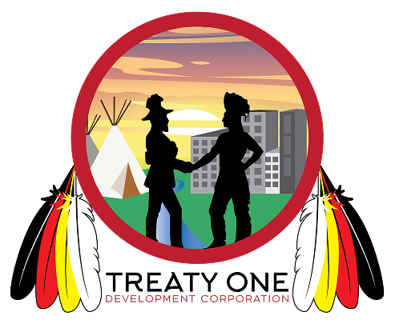

Welcome to the website of Treaty 1


This map shows the numbered treaties across Canada. Treaty 1 is one of the numbered treaties and is located in southern Manitoba.

All of the land highlighted in light blue on this map of Manitoba is part of Treaty 1 territory. Various communities, both urban and First Nations, benefit from being part of Treaty 1 territory and also acknowledge that they are located on Treaty 1 land.
Treaty 1 was signed on August 3, 1871, at Lower Fort Garry in Manitoba.

This concludes a basic summary of what Treaty 1. If you want to learn more about the First Nations communities, important people, and promises connected to Treaty 1, then you can check out our 2 other pages on those two topics to learn more about them!